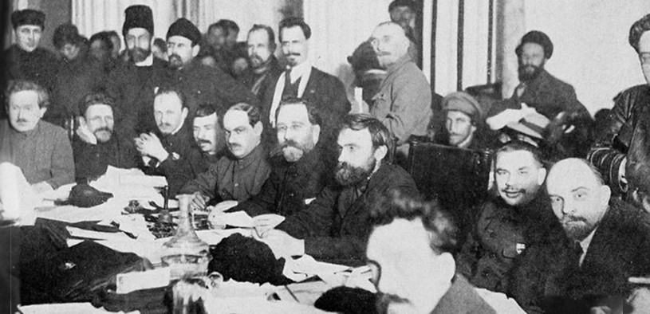

RISE OF THE BOLSHEVIKS
The Bolsheviks, led by Vladimir Lenin, were a radical faction of the Marxist Russian Social Democratic Labour Party (RSDLP) which split with the Mensheviks at the Second Party Congress in 1903. The Bolshevik party, formally established in 1912, seized power in Russia in the October Revolution of 1917 and was later renamed the Russian Communist Party, All-Union Communist Party, and ultimately the Communist Party of the Soviet Union.
During the summer of 1917, which saw events including the July Days and Kornilov affair, large numbers of radicalized workers joined the Bolsheviks, which planned the October Revolution that overthrew the government. The Bolsheviks initially governed in coalition with the Left Socialist-Revolutionaries, but increasingly centralized power and suppressed opposition during the Russian Civil War. After 1921, it became the sole legal party in Soviet Russia and the Soviet Union.
